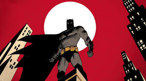
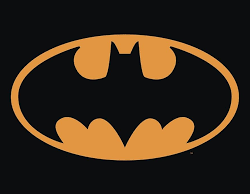
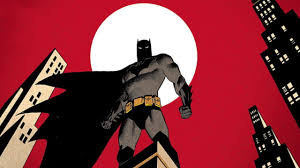
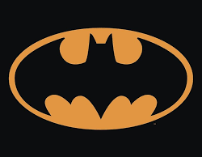

O batman é o justiceiro da cidade. Um dos melhores e mais preparados heróis que existem
Batsite
O site do herói mais forte
 



Últimas notícias
Batman salva idosa em perigo
Nesta madrugada 18/02/2026, dona Leodete estava caminhando tranquilamente pelas ruas de Gothan quando foi atacada e gravemente ferida por um grupo de meliantes ainda não identificados a não ser por Marcelo, o qual foi pego e entregue para a justiça por Batman, o meliante atualmente está no Hospital Bruce Wayne em acompanhamento médico após diversas partes do crânio fraturadas pealo herói, já dona Leodete ganhou alta e está vivendo tranquilamente pelas ruas da cidade.
Leia mais: Clique aqui
Batman frustra roubo tecnológico no centro
Na madrugada desta terça-feira 19/02/2026, moradores do distrito financeiro relataram explosões e movimentação suspeita em um prédio de pesquisa avançada. Segundo a polícia, um grupo criminoso tentava roubar protótipos de drones militares, mas a ação foi interrompida pelo vigilante mascarado. Os suspeitos foram encontrados imobilizados no local, junto a provas do crime, reforçando mais uma vez a atuação silenciosa e eficiente do herói nas ruas.
Leia mais: Clique aqui
{kind=link}
Bat-sinal reaparece após semana de silêncio
Após quase uma semana sem aparições registradas na madrugada dessa quarta-feira 18/02/2026, o famoso símbolo voltou a iluminar o céu de Gotham City durante a noite. A polícia confirmou que o chamado foi feito após um aumento de atividades criminosas em regiões periféricas. A reaparição do sinal trouxe alívio à população, que associa sua presença à redução imediata da criminalidade e à resposta rápida contra ameaças maiores.
Leia mais: Clique aqui
{kind=link}
Bruce Wayne anuncia investimento em segurança urbana em parceria com o herói Batman
Em coletiva realizada nesta manhã 18/02/2026, o empresário apresentou um amplo projeto de modernização da infraestrutura urbana, incluindo iluminação inteligente, sensores de movimento e apoio tecnológico às forças de segurança. Embora não tenha citado diretamente o vigilante de Gotham, Bruce disse ter recebido grande aprovação do herói, não existem evidências sobre tal conversa, porém muitos apontam suspeitas de parcerias passadas entre os dois, já que apresentam visões parecidas sobre a atualidade
Leia mais: Clique aqui
{kind=link}